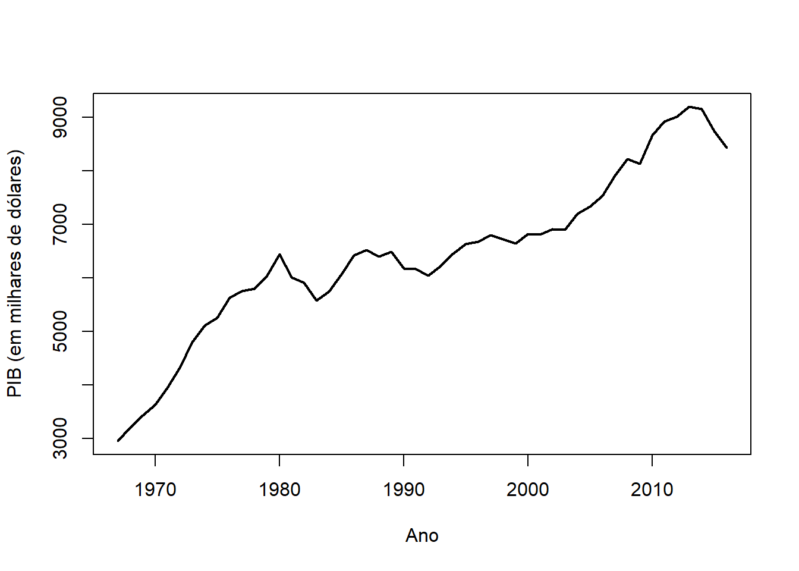

Dizemos que o vetor \(\boldsymbol{x}\), de comprimento \(n\), tem distribuição normal (multivariada) se sua função densidade é dada por
\[f(x|\mu,\Phi) = |2\pi\Sigma|^{\frac{n}{2}}\exp\left\{-\frac{1}{2}(\boldsymbol{x}-\boldsymbol{\mu})'\Sigma^{-1}(\boldsymbol{x}-\boldsymbol{\mu})\right\}\] onde \(\boldsymbol{\mu}\) é um vetor de comprimento \(n\) e \(\Sigma\) é a matriz de covariâncias. Para essa distribuição, \(E(\boldsymbol{x}) = \boldsymbol{\mu}\) e \(Var(\boldsymbol{x}) =\Sigma\).
Se \(\boldsymbol{x}|\boldsymbol{\mu}, \boldsymbol{\Sigma} ∼ \hbox{Normal}_n(\boldsymbol{\mu}, \Sigma )\), então, para qualquer matriz (real) \(\boldsymbol{A}\) de dimensão \(m\times n\) e para qualquer vetor \(\boldsymbol{b}\) de comprimento \(n\),
\[\boldsymbol{Ax} + \boldsymbol{b} ∼ \hbox{Normal}_m(\boldsymbol{A}\boldsymbol{\mu} + \boldsymbol{b}, \boldsymbol{A}\Sigma\boldsymbol{A}).\] Em particular, \(\boldsymbol{z} = \Sigma^{-1/2}(\boldsymbol{x} − \boldsymbol{\mu})\) tem distribuição Normal\((\boldsymbol{0}, \boldsymbol{I})\).
Considere que o vetor \(\boldsymbol{x}\) foi particionado em \(\boldsymbol{x} = (\boldsymbol{x}_1, \boldsymbol{x}_2)\), onde \(\boldsymbol{x}_1\) tem comprimento \(q < n\) e \(x_2\) tem comprimento \(n − q\). Os parâmetros da distribuição podem ser particionados da seguinte forma
\[\left(\begin{array}{c}\boldsymbol{x}_1\\ \boldsymbol{x}_2\end{array}\right)
\sim\hbox{Normal}_n\left[
\left(\begin{array}{c}\boldsymbol{\mu}_1 \\ \boldsymbol{\mu}_2\end{array}\right),
\left(\begin{array}{cc}\Sigma_{11} & \Sigma_{12} \\ \Sigma_{12}' & \Sigma_{22} \end{array}\right)\right]\] Então \(\boldsymbol{x}_1 \sim \hbox{Normal}(\boldsymbol{\mu}_1, \Sigma_{11})\) e \(\boldsymbol{x}_2 \sim\hbox{Normal}(\boldsymbol{\mu}_2, \Sigma_{22})\). Além disso \(Cov(\boldsymbol{x}_1, \boldsymbol{x}_2) = \Sigma_{12}\) e \(Cov(\boldsymbol{x}_2, \boldsymbol{x}_1) = \Sigma_{12}'\). Além disso,
\[\boldsymbol{x}_2|\boldsymbol{x}_1\sim\hbox{Normal}(\boldsymbol{\mu}_2+\Sigma_{12}'\Sigma_{11}^{-1}(\boldsymbol{x}_1-\boldsymbol{\mu}), \Sigma_{22}-\Sigma_{12}'\Sigma_{11}^{-1}\Sigma_{12})\] Também é possível rescontruiar a conjunta quando temos a condicional e a marginal, conforme mostra o lema abaixo.
Lema (Reconstrução da conjunta) Se \(\boldsymbol{x}_2|\boldsymbol{x}_1\sim\hbox{Normal}(\boldsymbol{\mu}_2+\boldsymbol{B}_1(\boldsymbol{x}_1-\boldsymbol{\mu}_1),\boldsymbol{B}_2)\) e \(\boldsymbol{x}_1\sim\hbox{Normal}(\boldsymbol{\mu}_1,\Sigma_{11})\), então,
Para \(i=1,\ldots,n\), considere o modelo linear abaixo: \[y_i= \beta_0+\sum_{j=1}^{p-1}x_{i,j}+\varepsilon_i=\underbrace{ \left(1\;\;x_{i,1}\;\;\cdots\;\;x_{i,p-1}\right)}_\text{$\boldsymbol{f}'_i$}\underbrace{\left(\begin{array}{c}\beta_0 \\ \beta_1 \\ \vdots \\ \beta_{p-1}
\end{array}\right)}_\text{$\boldsymbol{\beta}$}+\varepsilon_i=\boldsymbol{f}'_i\boldsymbol{\beta}+\varepsilon_i,\] onde \(x_i\) é fixado e \(\varepsilon\) é um ruído branco gaussiano. Pela independência entre \(y_i\) e \(y_j\), pode-se fazer a seguinte representação estocástica de \(\boldsymbol{y}\): \[\begin{equation}
\boldsymbol{y}=\boldsymbol{F}'\boldsymbol{\beta} + \boldsymbol{\varepsilon},
\end{equation}\] onde \(\boldsymbol{\varepsilon}\sim\hbox{Normal}(\boldsymbol{0},\nu\textbf{I}_n)\) e \(\boldsymbol{F}\) é uma matriz \(p\times n\) conhecida com \(i\)-ésima coluna dada por \(\boldsymbol{f}_i\):
\[\boldsymbol{F}=\left(\boldsymbol{f}_1,\ldots,\boldsymbol{f}_n\right).\] Disto, tem-se que \[\boldsymbol{y}|\boldsymbol{\beta},\nu\sim\hbox{Normal}(\boldsymbol{F}'\boldsymbol{\beta},\nu\textbf{I}_n)\]
4.2.0.1 Priori conjugada
Considere que \(\nu\) é conhecido. Então, a priori \(\boldsymbol{\beta}\sim\hbox{Normal}(\boldsymbol{m},\nu\boldsymbol{C})\) é conjugada para o modelo linear.
Pelo lema da reconstrução da conjunta, temos que
\[\left(\begin{array}{c}\boldsymbol{\beta}\\\boldsymbol{y} \end{array}\right)\sim\hbox{Normal}\left[\left(\begin{array}{c} \boldsymbol{m}\\ \boldsymbol{F}'\boldsymbol{m} \end{array}\right),\left(\begin{array}{cc} \nu \boldsymbol{C} & \nu\boldsymbol{C}\boldsymbol{F}\\ \nu\boldsymbol{F}'\boldsymbol{C} & \nu[\textbf{I}+\boldsymbol{F}'\boldsymbol{C}\boldsymbol{F}] \end{array} \right)\right]\] logo, a posteriori é dada por \[\boldsymbol{\beta}|\boldsymbol{y}\sim\hbox{Normal}(\boldsymbol{m}+A(\boldsymbol{y}-\boldsymbol{F}'\boldsymbol{m}), \nu[\boldsymbol{I}-\boldsymbol{A}(\boldsymbol{I}+\boldsymbol{F}'\boldsymbol{C}\boldsymbol{F})\boldsymbol{A}'])\] onde \(\boldsymbol{A}=\boldsymbol{CF}(\boldsymbol{I}+\boldsymbol{F}'\boldsymbol{C}\boldsymbol{F})^{-1}\).
4.3 O uso de modelos de regressão na estimação de tendência
Por algum tempo, modelos de regressão foram muito utilizados na estimação dos sinais de tendência e sazonalidade.
Considere que a tendência é definida como uma função \(T:(0,t]\rightarrow \mathbb{R}\). O Teorema de Weierstrass afirma que, se \(T\) é contínua, então para qualquer \(\delta>0\), existe um polinômio \(u(.)\) tal que \[|T(t)-u(t)|<\delta.\] Isto quer dizer que \(T(.)\) sempre pode ser aproximada por um polinômio. Assim, para determinada ordem \(p\), é correto afirmar que \[\begin{equation}
y_t = \beta_0 + \sum_{j=1}^p \beta_j t^j + \varepsilon_t
\end{equation}\] onde \(\varepsilon_t\) é um ruído estacionário, é um modelo razoável para uma série temporal com tendência. Assumindo que \(\varepsilon_t\) é um ruído branco gaussiano, tem-se o modelo de tendência polinomial de grau \(p\).
Fazendo \(\boldsymbol{f}_t'=(1,t,\ldots,t^p)\) , o modelo de tendência polinomial é reescrito como \[\boldsymbol{y}=\boldsymbol{F}'\boldsymbol{\beta}+\boldsymbol{\varepsilon}\] Para ilustrar a estimação da tendência, vamos utilizar a série sobre o PIB anual brasileiro, observada entre 1977 e 2016, que pode ser baixada com os comandos abaixo.
x <-read.csv("https://www.dropbox.com/s/zsoxpzpzqo6reml/PIB_brasil.csv?dl=1",sep=";",dec=",") PIB <- x$PIB PIB <-ts(PIB, start=1967, frequency=1)plot(PIB, lwd =2, xlab ='Ano', ylab ='PIB (em milhares de dólares)', main ='')

Vamos implementar a matriz de regressão \(\boldsymbol{F}'\) para \(p=8\)
p <-8n <-length(PIB)Z <-model.matrix( ~poly(time(PIB), p) )Ft <-t(Z)
Considere a prior \(\beta\sim\hbox{Normal}(\textbf{0},\nu lambda_0 \boldsymbol{I})\), com \(\lambda_0=10\). A média da posteriori será
lambda0=10C <-diag(lambda0,p+1)A <- C%*%Ft%*%solve(( diag(1,n)+t(Ft) %*% C %*% Ft) )beta_post <- A %*% PIB(beta_post)
Os resíduos mostram que relações residuais do ano anterior poderia melhorar a estimativa.
4.4 Exercícios
Exercício 1 Os dados abaixo representam os óbitod por suicídios no Mato Grosso do Sul. O banco de dados utilizado é dado a seguir. Construa uma série mensal e estude seu comportamento